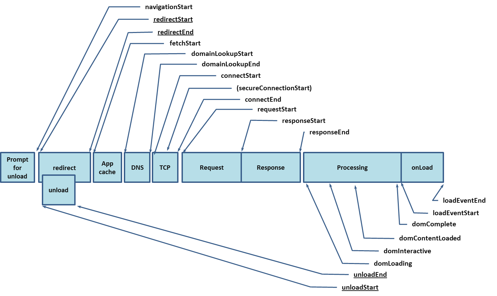

降低前端包体积，优化页面渲染时间，检测页面性能~
性能检测
Lighthouse
可使用 chorme 插件，可在 chorme 开发者工具中点击
| 性能指标 | 释义 | 权重 |
|---|---|---|
| FCP | 从进入页面到首次有 DOM 内容绘制所用的时间，即首次内容绘制。 | 15% |
| SI | 网页内容填充的速度，即速度指数。 | 15% |
| LCP | 从页面开始加载到视窗内最大内容绘制的所需时间，即最大内容绘制。 | 25% |
| TTI |
页面可交互的时间 1.页面开始绘制内容，即 FCP 指标开始之后 2.用户的交互可以及时响应 3.部分页面可见的元素已注册了监听事件（在 DOMContentLoaded 事件之后） 4.在 TTI 之后持续 5 秒的时间内无长任务执行（没有超过 50 ms 的执行任务 & 没有超过 2 个 GET 请求） |
15% |
| TBT | 测量的是 FCP 与 TTI 之间的时间间隔，即阻塞总时间。 | 25% |
| CLS | 评估累计布局位移，通过比较单个元素在帧与帧之间的位置偏移来计算 计算公式是cls = impact fraction * distance fraction 。 例： cls = 75% * 25% = 0.1875 impact fraction 是红色框部分 distance fraction 是蓝色箭头的距离 |
5% |
Performance 开发者工具使用
Performance API

const timing = window.performance.timing
| 名称 | 公式 |
|---|---|
| firstbyte：首包时间 | timing.responseStart – timing.domainLookupStart |
| fpt：First Paint Time, 首次渲染时间 / 白屏时间 | timing.responseEnd – timing.fetchStart |
| tti：Time to Interact，首次可交互时间 | timing.domInteractive – timing.fetchStart |
| ready：HTML 加载完成时间，即 DOM 就位的时间 | timing.domContentLoaded – timing.fetchStart |
| load：页面完全加载时间 | timing.loadEventStart – timing.fetchStart |
依赖分析优化
依赖分析工具
- 包体积大小类型：
- Stat：文件的“输入”大小，在未进行任何缩小，被称为“统计大小”
- Parsed：文件的“输出”大小，例如 Uglify，则此值将反映代码的缩小大小。
- Gzipped：通过 gzip 压缩运行解析的包/模块的大小
优化手段总结
- 分析
- Chrome Devtool Coverage 面板，确定页面中加载了哪些不必要的资源
- webpack-bundle-analyzer 依赖分析
- Code Splitting
- 多入口：基于 entry 配置，每个入口打包成单独的 bundle
- 抽离公共代码：如果多个页面使用了公共的模块，可以通过 SpitChunksPlugin 将代码分割成多个 chunks
- 动态加载：过动态import引入的模块会被 webpack 单独拆分成一个chunk
- DCE：production 模式下自动进行一些优化
- 代码压缩
- terser-webpack-plugin（webpack 5自带）
- 脚本加载的顺序
- 关键的脚本内联使用
- 其他的脚本在文档底部引入，或者通过 async/defer 异步引用
- 优化 CSS 资源加载
- mini-css-extract-plugin，按需加载css
- optimize-css-assets-webpack-plugin css压缩，移除无用的代码
- 优化图片的加载
- 图片懒加载
- 响应式图片
- WebP 图片格式优化
- 优化网络请求
- CDN 加速
- 合理的 HTTP 缓存策略
- 使用 HTTP/2
- 使用 pre-* 预处理